Home / Past papers / MLF End Term / this paper
2023 Dec24: IIT M AN EXAM ADD3 - 24 Dec 2023


- Useful Data has been mentioned above.
- This data attachment is just for a reference & not for an evaluation.
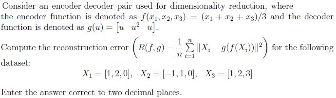
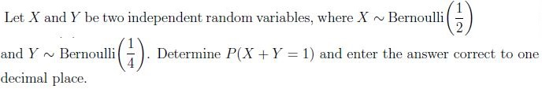
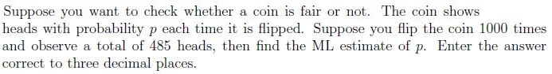
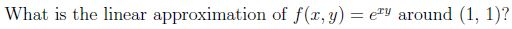
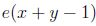
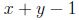
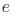
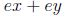
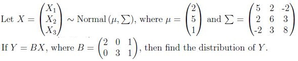
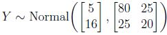
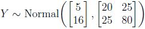
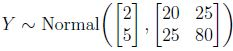
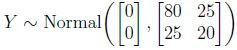
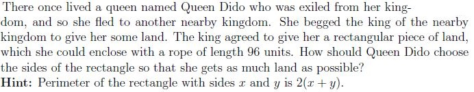
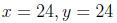
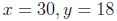
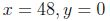
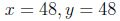
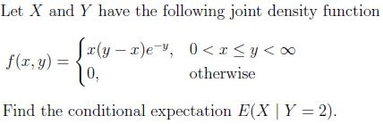
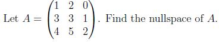
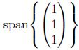
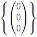
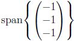
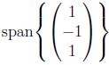
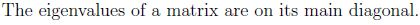
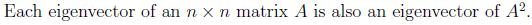
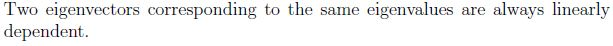
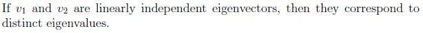
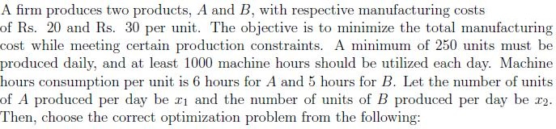
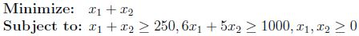
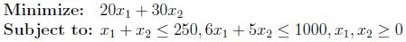
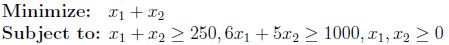
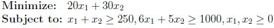
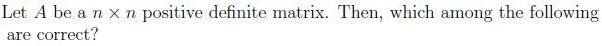
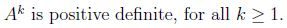
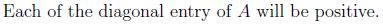
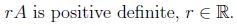
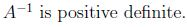
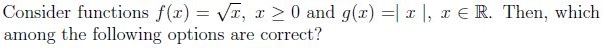
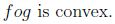
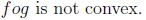
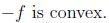
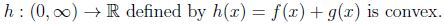
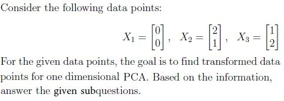
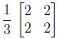
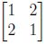
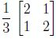
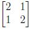
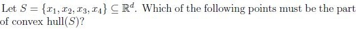
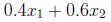
Answer key
- Q1 (MCQ, 0 marks): A
- Q2 (SA, 3 marks): 3.31 to 3.35
- Q3 (SA, 3 marks): 0.5
- Q4 (SA, 3 marks): 0.480 to 0.490
- Q5 (MCQ, 3 marks): A
- Q6 (MCQ, 3 marks): B
- Q7 (MCQ, 3 marks): A
- Q8 (SA, 4 marks): 1
- Q9 (MCQ, 2 marks): B
- Q10 (MCQ, 2 marks): B
- Q11 (MCQ, 2 marks): D
- Q12 (MSQ, 3 marks): A, B, D
- Q13 (MSQ, 3 marks): B, C
- Q14 (MCQ, 2 marks): C
- Q15 (SA, 2 marks): 1
- Q16 (MSQ, 2 marks): A, B
Concepts this paper tests
Auto-generated summary from the source site. Handy as a checklist; the lessons above explain each idea from scratch.
Here’s a structured summary of core topics, concepts, principles, and equations for the exam, followed by Mermaid knowledge graphs to visualize relationships.
Core Topics & Concepts
1. Probability & Random Variables
Discrete Distributions
| Distribution | PMF () | ||
|---|---|---|---|
| Uniform() | |||
| Bernoulli() | |||
| Binomial() | |||
| Geometric() | |||
| Poisson() |
Continuous Distributions
| Distribution | PDF () | ||
|---|---|---|---|
| Uniform[] | |||
| Exponential() | |||
| Normal() | |||
| Gamma() |
Key Theorems & Inequalities
- Markov’s Inequality:
- Chebyshev’s Inequality:
- Weak Law of Large Numbers (WLLN):
- Central Limit Theorem (CLT):
- Maximum Likelihood Estimation (MLE):
2. Linear Algebra
Key Concepts
- Nullspace: Solutions to .
Eigenvalues & Eigenvectors:
- .
- If is positive definite, all eigenvalues are positive.
- and share eigenvectors with .
- Convex Hull: Smallest convex set containing all points in .
PCA (Principal Component Analysis):
- Projects data onto directions of maximum variance.
- Covariance matrix .
Optimization
Linear Programming:
- Minimize/maximize a linear objective subject to linear constraints.
- Example:
3. Multivariable Calculus
Linear Approximation
For near :
Example for at :
Conditional Expectation
For joint density , the conditional expectation is:
4. Machine Learning Foundations
Dimensionality Reduction
Encoder-Decoder Pair:
- Encoder: .
- Decoder: .
- Reconstruction error:
PCA:
- Transform data to maximize variance along principal components.
- Projected variance is the largest eigenvalue of the covariance matrix.
Probabilistic Models
Joint & Conditional Probability:
- For independent , :
MLE for Bernoulli:
- Given heads in trials, .
2. Linear Algebra & Optimization
3. Multivariable Calculus & ML
Key Equations to Remember
- Reconstruction Error:
- Linear Approximation:
- MLE for Bernoulli:
- PCA Projected Variance:
- Conditional Expectation: